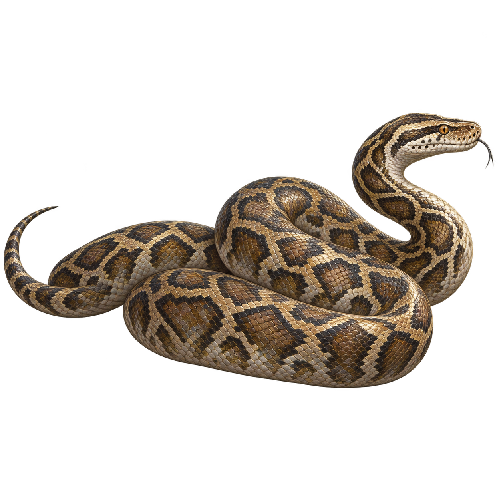
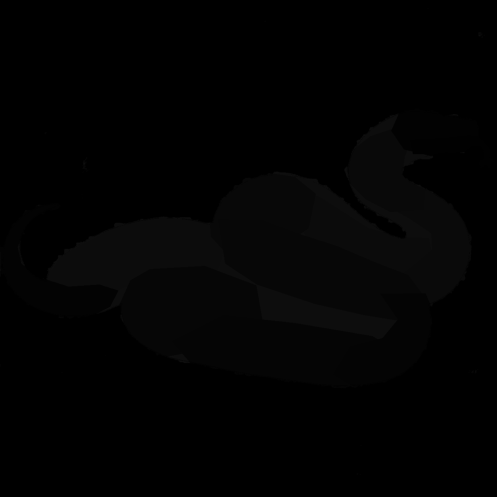
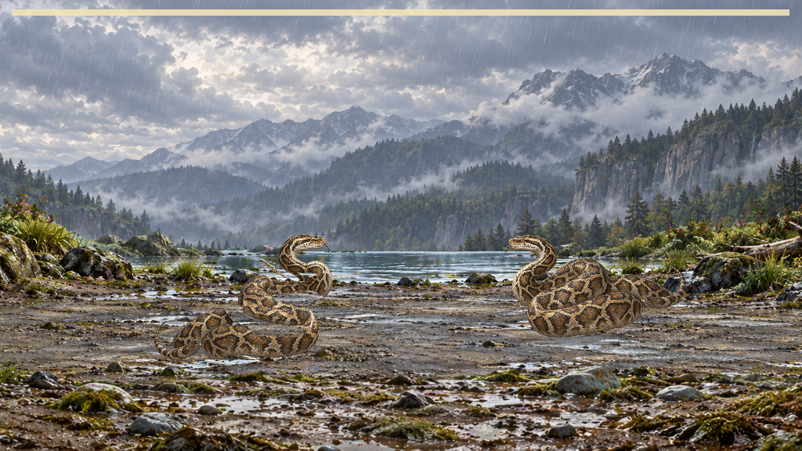
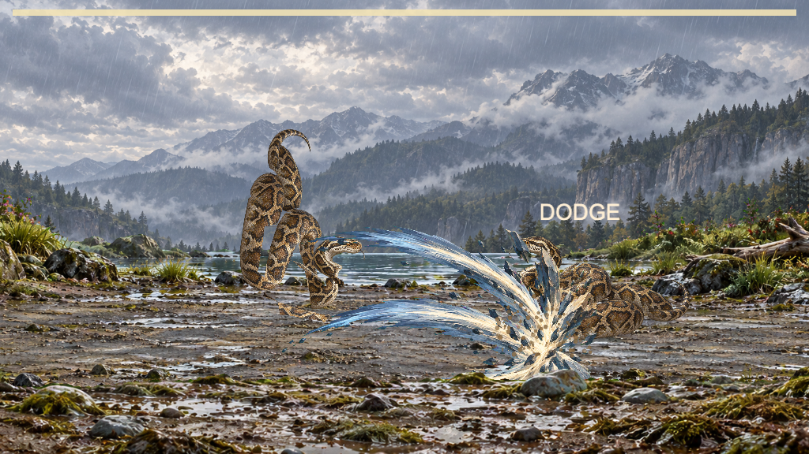
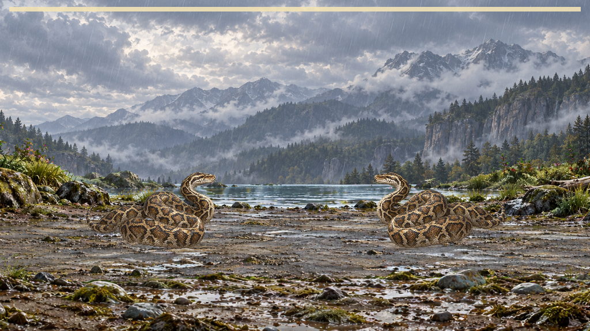

Current native technical checks pass; moving-body distortion remains. The boundary-preserving candidate closes measured cuts but fails eight action rows. No candidate film was run. Findings and exact refusals.





Run 20260923-python-current-diagnostic-01; zero rig refusals; 1.100000023841858/1.1999999284744263 ms per-rig p95. Candidate remains rejected and separate. Nick retains visual acceptance.